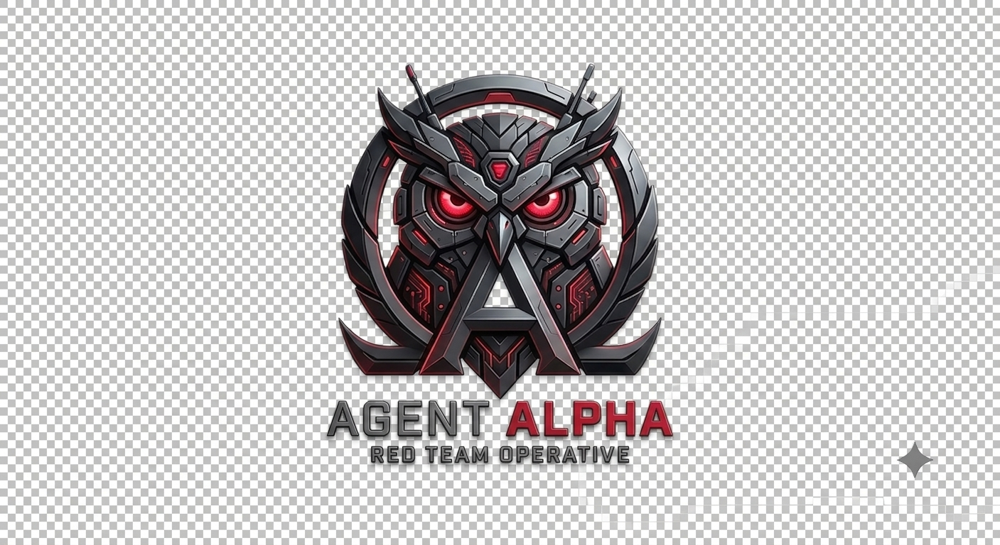

| Target | alpha-ai.web.id |
| Engagement | a1-fp |
| Assessment date | 21 July 2026 |
| Overall risk | High |
| Prepared by | Agent-Alpha autonomous red-team platform |
A conventional vulnerability scan of the target returned no exploitable findings. Agent-Alpha nevertheless established a verified administrative foothold by chaining three weaknesses: an origin server reachable directly behind the Cloudflare WAF, a database credential leaked in client-side JavaScript, and reuse of that credential against the application login. The result is full administrative access obtained without solving any challenge the WAF presented.
The chain was proven end to end — the harvested credential was used to authenticate as an administrator, and that authentication was verified, not inferred. Time from engagement start to first proof of access was 3 minutes 45 seconds.
| Finding | Technique | Severity |
|---|---|---|
| Origin exposed behind CDN (WAF bypass via origin-direct) | T1552.001 | High |
| Database credential leaked in client-side JavaScript | T1552.001 | High |
| Administrative access via credential reuse | T1078 | High |
The attacker reached the origin directly, bypassing the CDN challenge, harvested a leaked credential, and reused it to authenticate as an administrator.
The origin server was reachable by its IP address with a spoofed Host header, returning HTTP 200 while the public hostname returned a Cloudflare challenge. This negates the WAF entirely for any attacker who discovers the origin address.
A minified JavaScript bundle served by the origin contained a database password, recovered by pattern match and entropy analysis. Secrets embedded in client-delivered code are retrievable by any visitor.
The leaked credential was reused against the application login over the origin-direct path and authenticated as an administrator. Access was verified against the resulting session.
Severity Medium. Two nodes are reachable from the obtained access: the leaked database credential and the administrative access level. Downstream impact (post-exploitation) was not mapped — it was outside the scope of this engagement.
An administrative foothold on the application exposes all data and functions the admin role controls. Because the entry point defeats the WAF, existing edge protections do not mitigate this path.
1. Restrict the origin server to accept traffic only from Cloudflare address ranges, so the WAF cannot be bypassed by hitting the origin directly.
2. Rotate the leaked database credential immediately and treat it as compromised.
3. Remove secrets from client-delivered JavaScript; move configuration to server-side only.
4. Re-test after remediation to confirm the chain is broken.